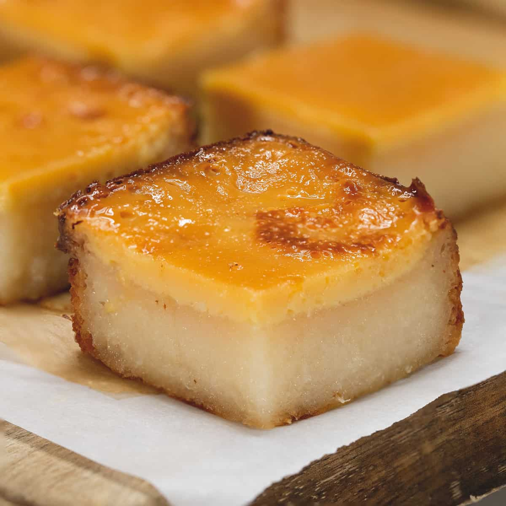

Cassava Cake

Even I want to eat some. :(
Ingredients
- 2 lbs packs grated cassava
- 2 cups coconut milk
- 1/2 12 oz. can evaporated milk
- 3 pieces egg
- 1/4 cup butter melted
- 6 tbsp. cheddar cheese grated
- 1/2 cup condensed milk
- 14 tbsp. granulated white sugar
Topping Ingredients
- 2 tbsp. flour
- 2 tbsp. sugar
- 1/2 cup condensed milk
- 2 tbsp. cheddar cheese grated
- 2 cups coconut milk
Instructions
- Combine grated cassava, butter, 1/2 cup condensed milk, 1/2 cup evaporated milk, 6 tbsp. cheddar cheese, 14 tbsp. sugar, and 2 eggs in a mixing bowl.
- Mix thoroughly.
- Add 2 cups coconut milk. Mix again.
- Grease the baking tray and pour in the mixed ingredients.
- Preheat to 350F for 10 minutes then put in the batter and bake for 1 hour.
- Combine 2 tbsp. sugar and flour in heated saucepan.
- Pour in 1/2 cup condensed milk then mix well.
- Add 2 tbsp. cheddar cheese while stirring.
- Pour 2 cups of coconut milk and stir for 10 minutes.
- Pour the topping over the Cassava Cake and spread evenly.
- Separate the yolk and egg white of the remaining egg.
- Glaze the topping with the egg white using a brush.
- Set oven to broil mode. Broil until color turns light brown.
- Garnish with extra grated cheese on top. Serve and enjoy!